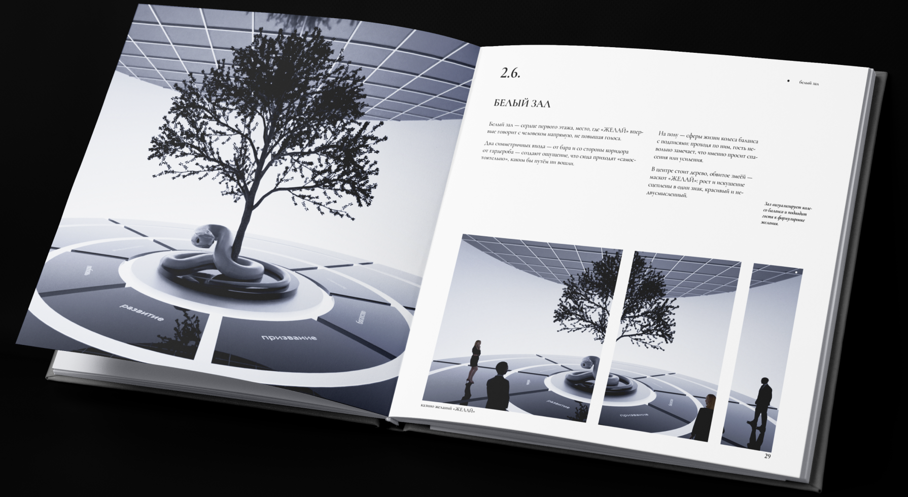
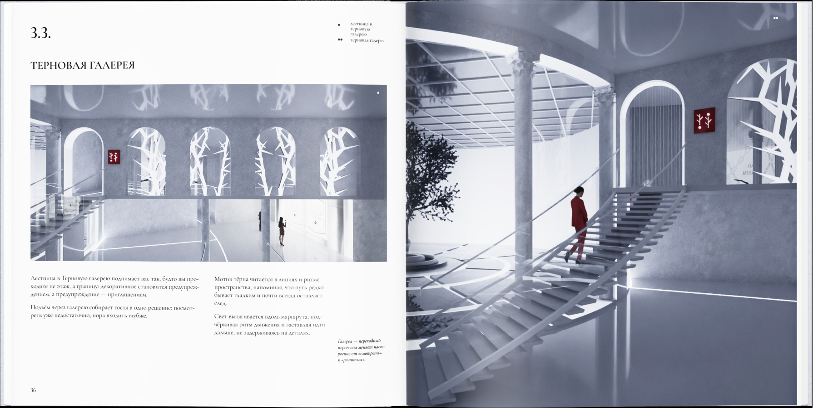

Книга
Книга — это пространство азарта, где можно испытать желание на прочность. Она соблазняет, подсказывает и открывает дверь к тому, чего ты желаешь по‑настоящему.
подробнее

Книга — это пространство азарта, где можно испытать желание на прочность. Она соблазняет, подсказывает и открывает дверь к тому, чего ты желаешь по‑настоящему.
подробнее